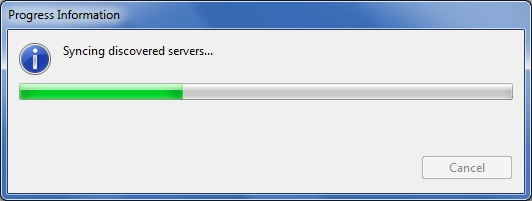

Selecting a Cluster
The select cluster option is enabled after you create or register a cluster.
To select a cluster, perform the following steps.
- Launch the application and log in with a valid password.
Select Cluster window is displayed.

- Select the cluster name from the Cluster
Name drop down list.
- Click OK.The Progress Information window is displayed is displayed while the console fetches the management information for the selected cluster.

- The Gluster Management Console window displays the selected cluster.